Ostrovan tvrdý chleba má
Publikováno 1. 10. 2019 (20:48) v kategorii Život ve Švédsku • Autor Knut Holm • Přečtete za 12 minut
Typický švédský domek s prostornou terasou a velkou zahradou, písečná pláž dvě minuty od domu, parkování lodě pod nosem, nejbližší potápěčská lokalita pět minut autem, dojíždění do práce lodí, venkovský život 30 km od Stockholmu. Zní to hrozně romanticky, dokud k tomu ovšem nedodám, že na ostrově není žádný obchod ani restaurace a hlavně - taky žádný most. Člověk je zcela odkázán na lodní dopravu a rozmary počasí na Baltském moři. Přidejte k tomu, že se na ostrov mezi půlnocí a šestou ráno nedá bez vlastní lodi vůbec dostat, že přívoz jezdí dvakrát za hodinu, že z koncertu musíte domu vodním taxíkem a vyjde vám, že toto není bydlení pro každého. Tak schválně, převažují u vás klady nebo zápory ostrovního života?
Toto je Tynningö
Tynningö (čte se [týnyngó]) je malý ostrov ležící co by kamenem dohodil na jihovýchod od Vaxholmu, hlavního města stockholmského souostroví, a zhruba 20 km vzdušnou čarou severovýchodně od Stockholmu. Má rozlohu 4,63 km2, necelých 400 stálých obyvatel a od června roku 2019 je i naším domovem.
O tom, proč jsme se stěhovali a jak teď bydlíme, jsem už dříve psal, takže pokud vás to zajímá, můžete si o tom přečíst také. Nyní bych vám však rád představil ostrov samotný a popsal pro vás - pro lidi z pevniny :-P - jak se nám tady žije.
Nejdůležitějšími body každého ostrova jsou jeho vstupní brány - mola, kterým se ve švédština říká brygga. Mola mají různou velikost a slouží k různým účelům. Nejvíce je pochopitelně mol privátních, která slouží pro dlouhodobé stání lodí obyvatelů ostrova. Dále zde najdeme mola hostovská, kde je stání povoleno pouze po omezenou dobu a která slouží jak pro stání lodí návštěvníků ostrova, tak jako přistávací stanoviště pro veřejnou dopravu a vodní taxi. Na několika málo ostrovech, kde je díky velikosti možná i autodoprava, pak najdeme i speciální molo pro přívozní lodě.
Tynningö v současné době obsluhuje jedna přívozní loď (švédsky färja), která se jmenuje Linea. Pojme zhruba 30 osobních automobilů a díky tomu, že jejím provozovatelem je státní podnik Trafikverket, může na ní každý cestovat zcela zdarma (je hrazená z místních daní). Ve špičkách tato loď vyplouvá každých 20 minut, mimo špičky dvakrát za hodinu a v noci je mimo provoz. Cesta mezi pevninou a ostrovem jí trvá zhruba 8 minut. Přesný jízdní řád si můžete prohlédnout zde.
Na následující mapce můžete vidět mapu ostrova, kde jsem červeně vyznačil nejdůležitější mola.
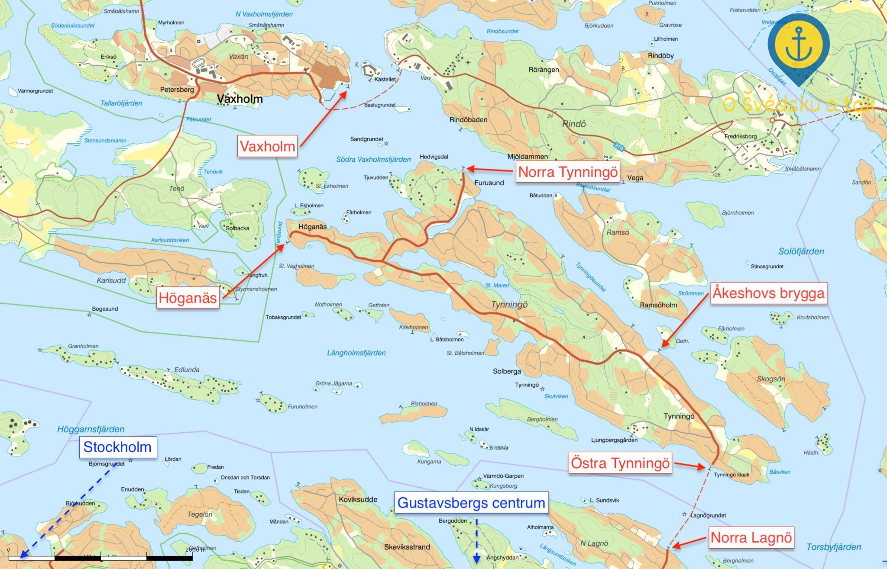 Mapa ostrova Tynningö a blízkého okolí
Stěžejní linky pro život na ostrově
- Přívoz mezi pevninou z mola Norra Lagnö na ostrovní molo Östra Tynningö. Cesta autem na Norra Lagnö trvá automobilem z centra Stockholmu zhruba 40 minut, z města je třeba jet směrem na Gustavsberg centrum.
Na Gustavsberg centrum se zároveň nachází nejbližší obchody a restaurace dosažitelné autem, z domu nám cesta tam včetně doby strávené na přívozu trvá zhruba 20 minut. Také zde nalezneme obrovské parkoviště, které je zdarma a slouží pro dojíždějící do Stockholmu - stačí přesednout na autobus, který jezdí každých 10 minut (po celý den) až na Slussen.
Z Gustavsberg centrum zajíždí na Norra Lagnö i autobus, jezdí ovšem pouze několikrát denně, takže vlastní auto je na ostrově nezbytností. - Spojení lodní veřejnou dopravou z mola Höganäs přímo do centra Stockholmu na molo Strömkajen. Tuto linku provozuje společnost Waxholmsbolaget. Od zhruba poloviny září do poloviny května je pro majitele dlouhodobých jízdenek pro stockholmskou dopravu zdarma, jinak stojí standardní jednosměrná jízdenka 64 SEK. Spoje odplouvají celoročně zhruba 6x denně oběma směry, přes hlavní sezónu častěji. Cesta trvá zhruba hodinu.
Waxholmí lodě nejsou žádné středověké bárky, ale prostorné a pohodlné lodě, kde si koupíte kafe, zapojíte do zásuvky noťas a připojíte se na WiFi. Při dojíždění do práce - k nezaplacení. Na lodi se dá plnohodnotně pracovat, takže nezabijete každý den dvě hodiny na cestě.
Kromě toho odplouvají lodě do Stockholmu i z mola Norra Tynningö, cesta je však delší, dražší a spoje jsou méně frekventované.
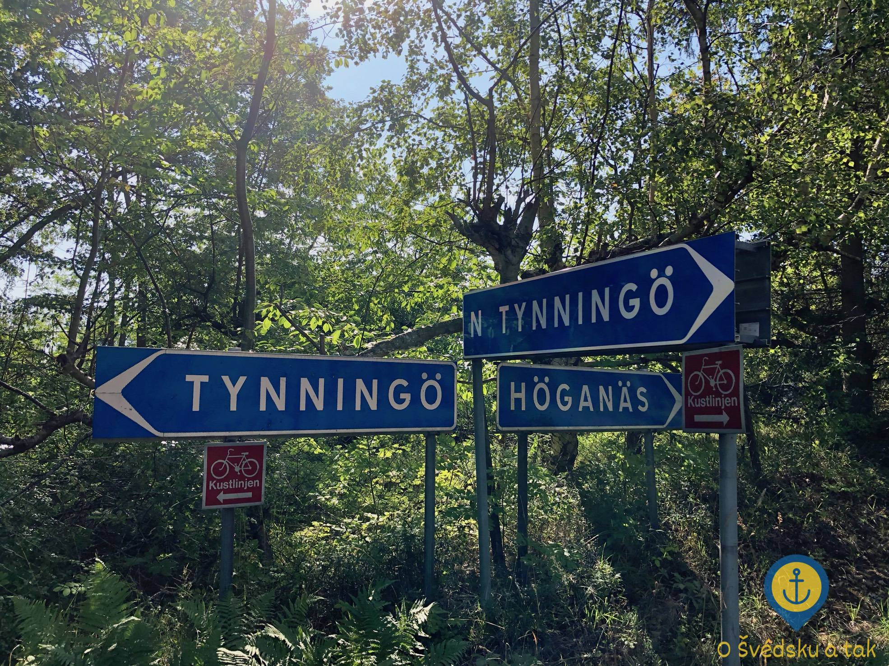 Hlavní ostrovní rozcestník
- Lodní linky společnosti Waxholmsbolaget spojují Tynningö rovněž s ostrovem Vaxholm, který má to privilegium a s pevninou je propojen mostem. Tyto spoje odplouvají střídavě z mol Höganäs a Norra Tynningö celoročně po celý den, a to i pozdě večer. Cesta trvá zhruba 10 minut, je opět zdarma nebo za 47 SEK a z Vaxholmu se dostanete rovněž každých 10 minut autobusem veřejné dopravy do centra Stockholmu (k Tekniska högskolan) zhruba za hodinu.
- Mezi moly Östra Tynningö, Höganäs a Norra Tynningö jezdí přes den nepravidelně malý ostrovní autobus linky 689, který je provozován stockholmskou veřejnou dopravou. Časy odjezdů autobusu navazují na lodní spojení z příslušných mol a spoje na sebe vždy čekají. Ostrov je malý a autem nebo atobusem jej celý přejedete za zhruba 10 minut. Cestu lze absolvovat i pěšky nebo na kole, vzdálenost mezi přívozem a Höganäsem je necelých 6,5 km.
Kuriozitou je, že autobus nemá na ostrově kde parkovat, takže v noci (a někdy i přes den, když má dlouhé intervaly) parkuje na pevnině. - Noční veřejná doprava na ostrově chybí. Jediná možnost, jak se dostat ve všední dny v době 23:00-6:00 a o víkendu v době 0:00-7:00 na ostrov, je využít vlastní loď nebo vodní taxi. Vodní taxi vám zastaví na jakémkoliv hostujícím mole na ostrově, k nám je nejblíže molo Åkeshovs brygga (asi 2 minuty pěšky od domu). Cena z Vaxholmu (kam jezdí noční autobusy) je zhruba 500 SEK.
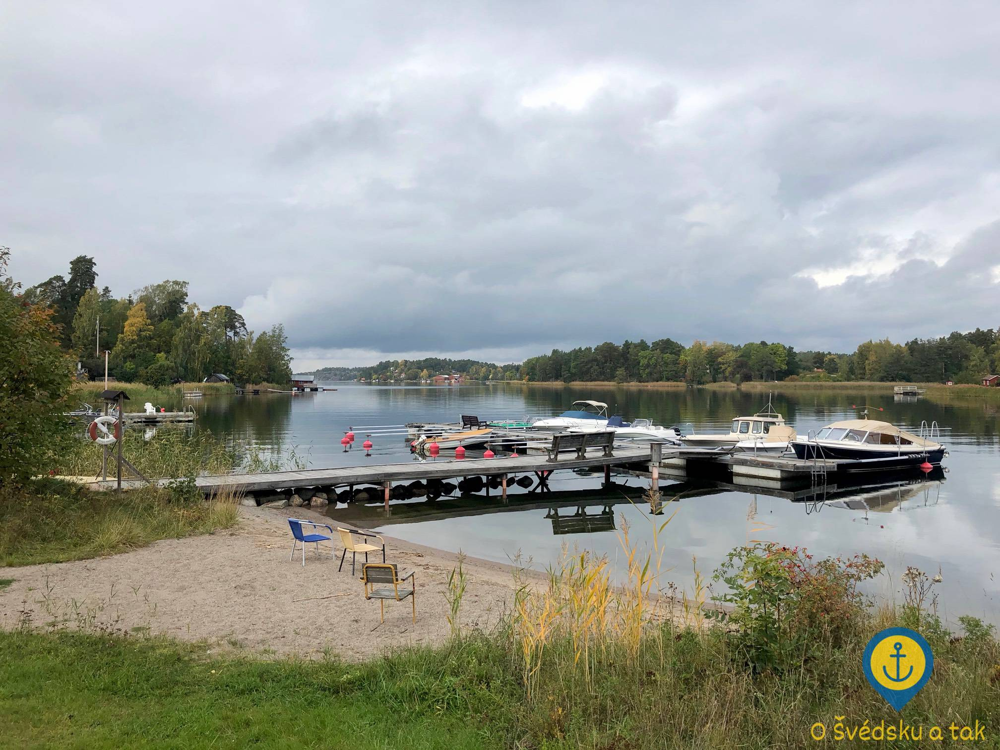 Pláž a molo Åkeshov
Život na ostrově
S parkováním je to na ostrově docela kříž - všichni sice mají svá soukromá stání na pozemcích, ale silnice jsou velice úzké a prostor pro parkování nenabízejí. Kdybyste chtěli ostrov navštívit, je lepší nechat auto na pevnině a přijet lodí, protože nebudete mít kde zaparkovat.
Ke třem hlavním molům se sice vlezou dvě nebo tři auta, ale i místní využívají této možnosti velice zřídka a jenom když není zbytí.
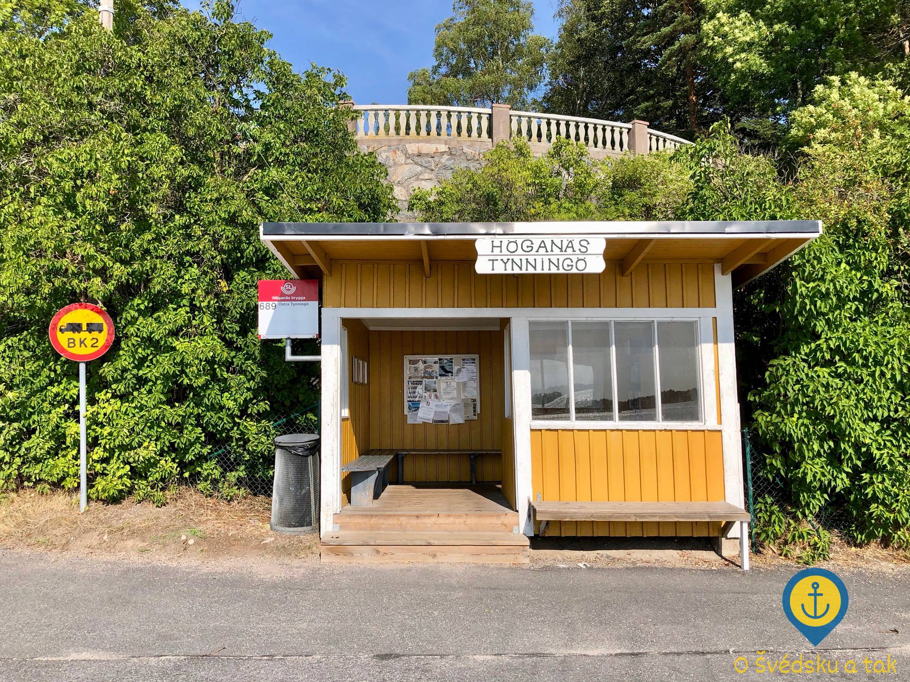 Čekací budka na molu Höganäs
Doprava po ostrově na kole je oproti tomu velice příjemná - desítky kol lze bez problému odstavit u každého mola nebo kdekoliv jinde na ostrově a ani se zámkem si nemusíte dělat starosti.
Bezpečnost je zde na vysoké úrovni, protože ostrovní komunita je velice specifická. Lidé se mezi sebou dobře znají - kromě jiného zde fungují sousedské hlídky a když se třeba někomu zaběhne kočka, do třiceti minut je na facebookové vývěsce její fotka s popisem přesné polohy. Cizinců je zde jako šafránu s výjimkou midsommaru a letní sezóny, kdy se počet obyvatel díky letním sídlům a bohužel i Airbnb rozroste až na jeden tisíc.
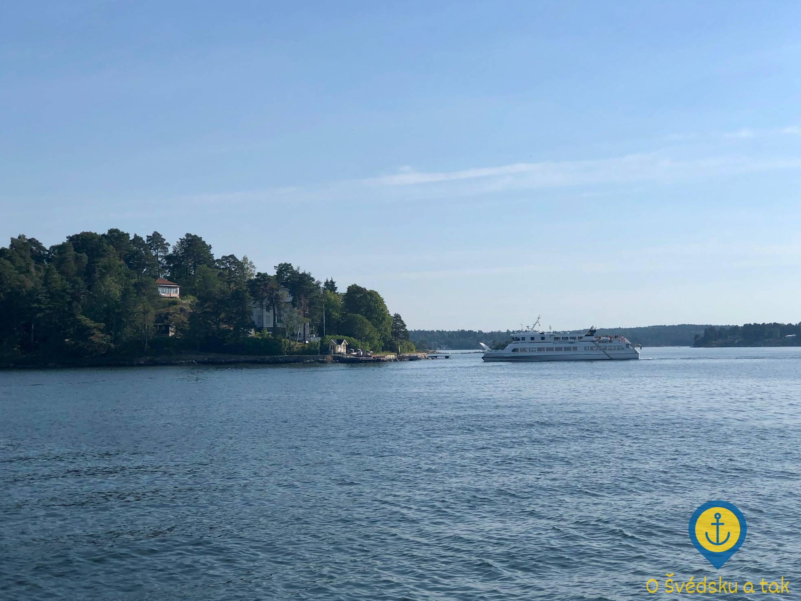 Loď společnosti Vaxholmsbolaget připlouvá na molo Höganäs
Více než dvojnásobný počet obyvatel je na ostrově hodně znát a v létě bývá smutným pravidlem, že když přijedete na přívoz pozdě, nemusíte se tam už vejít. V takovém případě je třeba obrnit se trpělivostí, zapnout autorádio a počkat si 20 minut na další přivoz, který v takovém případě dubbluje a vrátí se pro vás i mimo standardní jízdní řád.
Příhod s dojížděním přívozu na poslední chvíli máme již nespočítaně. Někdy se to povede, jindy ne - a to i přestože povýšíte svůj řidičský um na úroveň GTA Norra Lagnö.
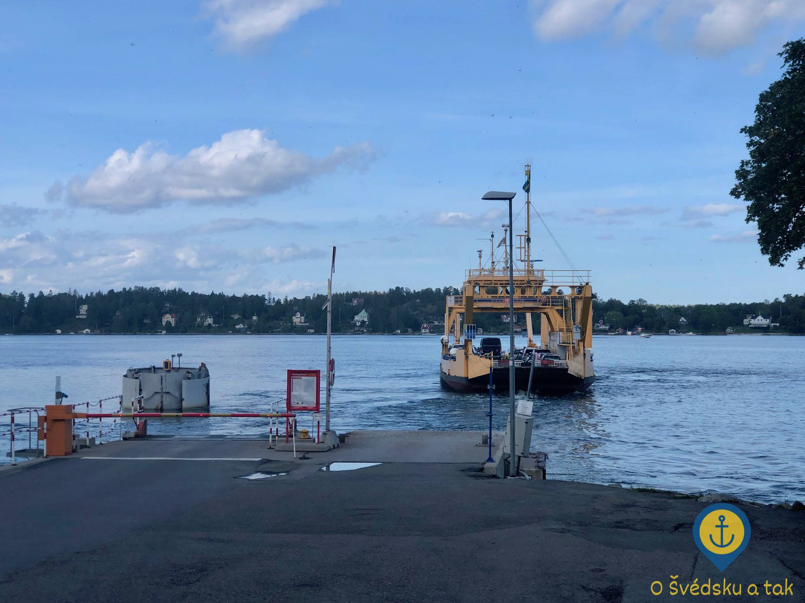 Převozní loď odplouvá od mola Norra Lagnö - tento pohled se vám naskytne, když tak tak nestihnete přívoz (čti: když prohrajete GTA Norra Lagnö)
Naloďování na přívoz má svá pravidla - je třeba sledovat lodní semafor a najíždět podle pokynů současně do levého a pravého nebo pouze středového pruhu. Při současném najíždění se auta střídají doleva a doprava, přičemž první se najíždí vždy doprava. Při vyjíždění se opět první zprava vyjíždí a levý a pravý pruh se zipuje. Pokud je třeba nalodit i prostřední pruh, naloďuje i vyloďuje se jako poslední.
Jednou za čas se stane, že má přívoz špatný den a prostě se pokazí. Situace jsou to vtipné pro toho, kdo zůstal na ostrově a nikam jet nepotřebuje, ale už méně vtipné pro někoho, kdo se právě vrací ze dvou ponorů hladový jako vlk a zůstane s autem plným mokrého potápěčského vybavení trčet na Norra Lagnö. V tu chvíli se vám ošklivě přehodnotí priority - je vám jedno, že spoj nejede za pět minut tak jak měl a modlíte se, aby měl alespoň jenom pár hodin zpoždění. Taky by se totiž mohlo stát, že ten den nepojede vůbec a nezbude než auto nechat na pevnině a přestoupit na loď. Inu, i takovéto situace k ostrovnímu životu patří, naštěstí se to ale nestává nijak často.
Dostáváme dost dotazů ohledně toho, jak často se stane, že je doprava na nebo z ostrova úplně nemožná - v tomto ohledu vás zklamu, Magnus nás uklidnil, že se to stane jednou za pět let. Led nepředstavuje pro lodě žádný problém, ty velké si s ním hravě poradí a ten zbytek může těžit z toho, že kolem našeho ostrova denně proplouvají velké trajekty do Finska a Estonska, které led nemilosrdně rozbíjejí.
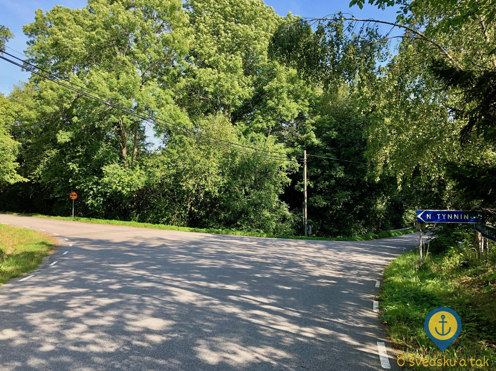 Jediná křižovatka na ostrově - směrem z Höganäsu odbočka na Norra Tynningö (vlevo) a na Östra Tynningö (vpravo)
Jakmile přistane přívoz na Östra Tynningö, vyjedete s autem na ostrovní hlavní cestu. Ztratit se nemůžete, protože na celém ostrově je jedna jediná křižovatka, kde z hlavní cesty odbočíte buď na Höganäs nebo na Norra Tynningö.
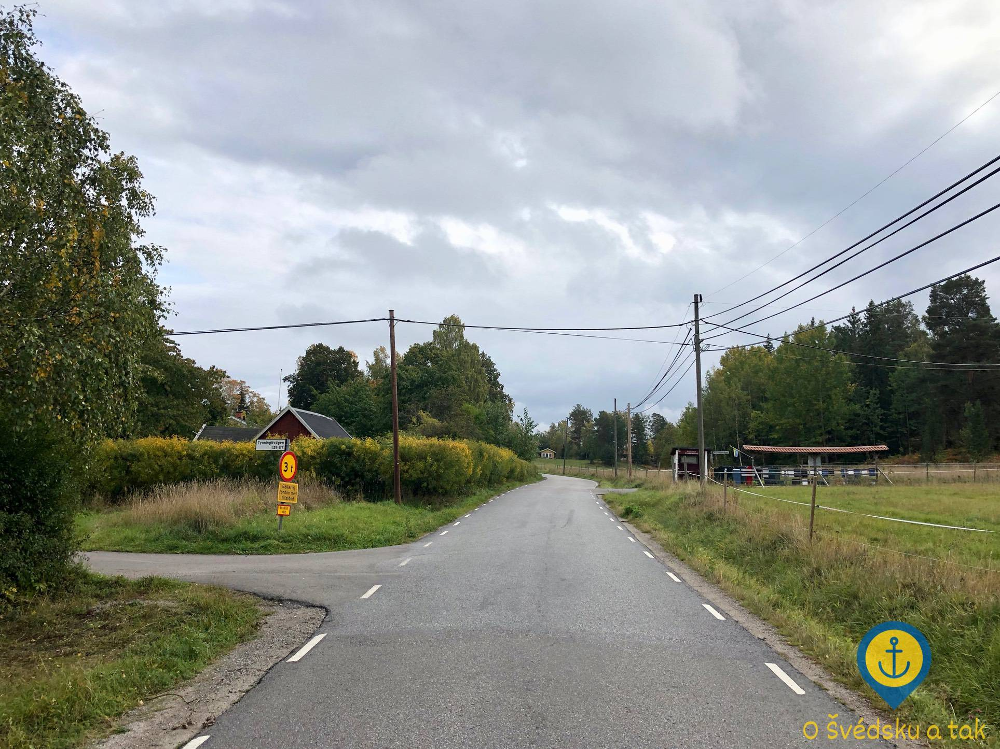 Hlavní silnice na ostrově s odbočkou vlevo k molu Åkeshov
Z hlavní cesty vybíhá ještě celá řada malých cestiček, které jsou však slepé a slouží jako příjezdové cesty k domům. Naši odbočku je těžké minout, protože je přímo u ekochovu roztomilých čuníků. Všem návštěvám říkáme, že je to „u prasátek doprava“ a ještě nikdo se neztratil :-)
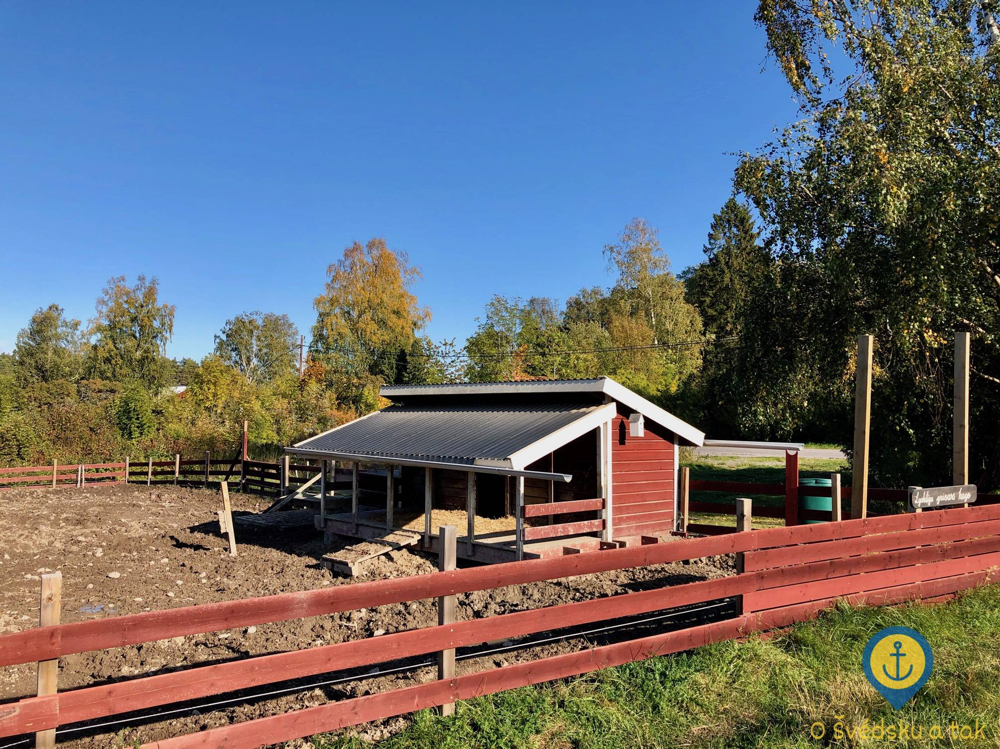 Ekochov šťastných prasátek
Doručování pošty na ostrov už je dostatečně komplikované nutností použít přivoz, takže všechny poštovní schránky najdeme přímo u hlavní silnice a musí být ze zákona umístěny tak, aby do nich šly dopisy hodit z okýnka poštovního auta.
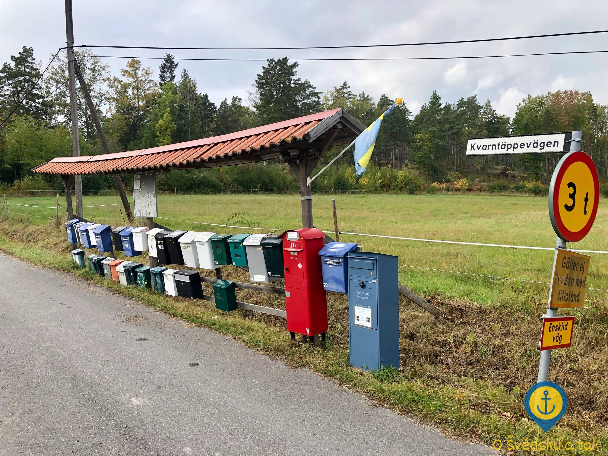 Poštovní schránky u hlavní silnice
Kromě švédské pošty Postnord k nám ale žádná dovážková služba nezajíždí - nelze si tak objednat ani jídlo ze supermarketu, ani rozvoz nadměrných balíků domů od komerčních doručovatelů. Jediná výjimka je tak auto od firmy Hemglass, které na ostrov zavítá přes léto každou sobotu rozvážet zmrzlinu.
Vyvážení odpadu zajišťuje komuna (něco jako okres) a funguje poměrně dobře. Nádoby na smíšený odpad jsou blízko u domu i hlavní silnice, centrum pro tříděný odpad se nachází relativně uprostřed ostrova a u nádob se dá pohodlně zaparkovat. Lze tam vytřídit všechny standardní věci kromě textilu.
Co se hromadné dopravy týče, žádné oficiální zastávky na ostrově nejsou, obyvatelé si však vyrobili čekací budky, které především v zimě chrání před rozmary počasí. Celoročně pak slouží jako malé knihovny, kam místní nosí knihy, které už přečetli, vyměnit za jiné knihy, které tam ze stejného důvodu již umístil někdo další. Také se tam hromadí řada inzerátů a oznámení svolávající obyvatele k různým společenským akcím.
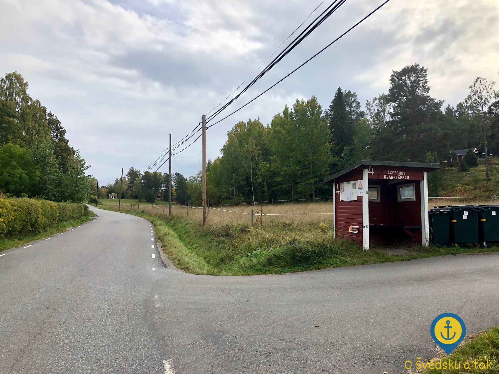 Zastávka místního autobusu linky 689
A jak se tedy používá autobus? Nastoupit můžete kdekoliv na trase tak, že si autobus prostě odmávnete. Při vystupování zase stačí řidiči říct, kde přesně chcete zastavit (v tomto případě slouží očíslované zastávky jako velmi dobrý orientační bod).
Ostrovní drby
Ostrov má poměrně dlouhou historii a žije zde řada starousedlíků. Pokud máte rádi drby, jste na správné adrese :-)
Bilder av Tynningö
Bilder av Tynningö je kniha o ostrově, kterou napsali tři spoluautoři a mapuje poměrně dlouhou historii ostrova. Drbů je tam opravdu požehnaně! Koho by třeba nezajímalo, který byl úplně první dům na ostrově, kdy začal na ostrov jezdit přívoz nebo kdy se na ostrově objevila první auta? To a ještě mnohem více se dozvíte v této knize.
My jsme k ní přišli trochu kuriózním způsobem: to takhle seděla Terka v autě na přívozu a najednou klepe někdo na okýnko. „Paní, nechcete koupit knihu?“ usmívá se na ni stařík od ucha k uchu. Samozřejmě, že bere Swish. A ano, je to jeden z autorů (je mu přes 90 let). Odmítli byste? Stařík takto prodával knihu celé léto a myslím si, že ji doma má již celý ostrov. Poznámka: v zastávkových budkách jsem ji ještě neviděl.
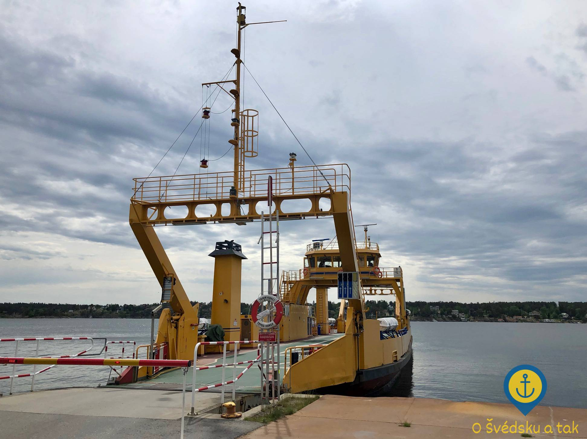 Převozní loď o pauze na molu Östra Tynningö
Spor o komunu
Náš ostrov samosprávně spadá pod komunu Vaxholm. To znamená, že komuně Vaxholm platíme daně a že nám za to komuna na oplátku zajišťuje např. pitnou vodu, rozvoz odpadu a veřejnou dopravu. Všechno tohle je samozřejmě super, jenomže jakmile nastoupíte na přívoz a vystoupíte na Norra Lagnö, tak pevnina, kterou jste právě dobyli, spadá samosprávně pod komunu Värmdö.
Problém nastává např. ve chvíli, kdy musíte k lékaři. Každý předpokládá, že pokud vám objedná lékaře ve vaší komuně, je to pro vás to nejlepší, co se může stát - pokud ovšem váš život není corner case na ostrově Tynningö, kdy je vaše komuna tak blízko, ale přece tak daleko. Krásně by se to bývalo jezdilo k lékaři autem, kdyby náš přívoz nemířil na pevninu do cizí komuny!
Dlužno podotknout, že v době ještě ne tak dávné nemělo Tynningö ani svoje vlastní PSČ a dělilo se o něj s Vaxholmem. Veškeré těžké balíky tak končily právě tam - autem se tam od nás jede hodinu přes tři přívozy. Hlas lidu byl ale naštěstí v tomto případě silnější a Tynningö zhruba před rokem obdrželo své unikátní PSČ! Balíky začaly chodit na poštu na Gustavsberg centrum a problém byl z velké části vyřešený. Pokud ale váš e-shop neaktualizuje tyto informace v databázi adres zrovna pravidelně a nedovolí vám v objednávce přepsat automaticky předvyplněnou směrovačku, kontaktu se zákaznickou podporou se stejně nevyhnete. „A proč se to číslo vlastně změnilo?“ „Víte... To je na dlouho.“
Värmdö komuna nás celkově nemá zrovna v lásce a velmi ráda by se nás zbavila úplně. Odmítá nám přidat více autobusových spojů na Norra Lagnö nebo nedejbože protáhnout tuhle linku až na ostrov a sloučit ji s naší linkou ostrovní. Možná ale začalo svítat na lepší časy a dočkáme se aspoň chodníku pro pěší od zastávky k přívozu!
Tato skutečnost ovšem znovu popudí obyvatele Norra Lagnö, kteří přívoz na Tynningö bytostně nenávidí kvůli zvýšené automobilové dopravě na tom jejich konci světa. My je sice částečně chápeme, ale někudy jezdit musíme. Faktem zůstává, že Vaxholm by snad i byl ochoten nám zařídit přívoz k nim, ale o to zase nestojíme my, obyvatelé ostrova, protože bychom přišli o přívoz do Värmdö. Tuto bezvýchodnou situaci jsme se snažili řešit už i změnou komuny - marně. Spor o komunu je tak nejspíš momentálně odložen do dalšího volebního období.
Ö-kortet
Ö-kortet je pro ostrovany něco jako svatý grál. Když vlastníte ö-kortet, můžete za pouhých 525 SEK ročně jezdit všemi Waxholmsbolaget loďmi celoročně zdarma a to je něco, co na ostrově prostě chceš. Vlastnictví ö-kortet je podmíněno pouze dvěma věcma: ostrov nesmí mít most na pevninu a na ostrov nesmí zajíždět státní přívoz.
V roce 2013 se stalo, že do té doby soukromě provozovaný přívoz z Tynningö na Norra Lagnö převzal stát, čímž sice pro obyvatele významně klesly náklady na jeho provozování, ale navždy se museli rozloučit s ö-kortet, s čímž se místní dodnes nesmířili.
Důrazně vás žádám o jediné: prosím, jestli nás někdy navštívíte, nevyslovujte na tomto ostrově slovo ö-kortet nahlas.
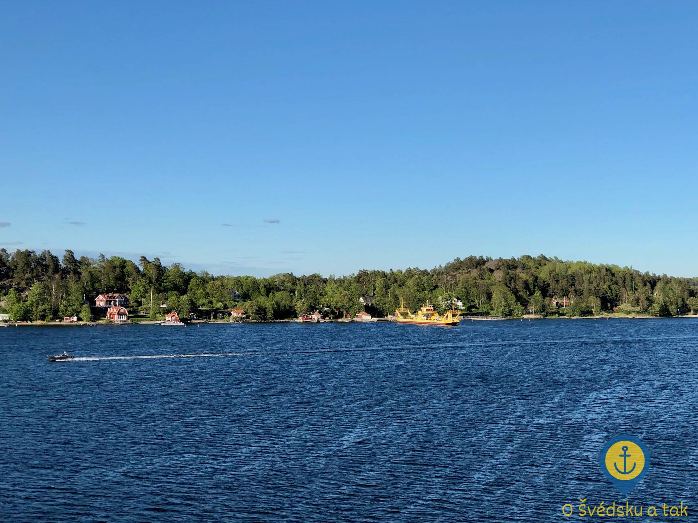 Pohled na Östra Tynningö směrem z Norra Lagnö s připlouvajícím přívozem
Kallelse
Občas se stane, že chcete jet přívozem, který má v jízdním řádu poznámku A. Poznámka A znamená, že dokud se pořádně nenaučíte švédsky, tak spoji s poznámkou A jezdit nebudete.
STOP. Abych to vzal od začátku - když je váš spoj označen poznámkou A, znamená to, že jede na kallelse, což by se dalo do češtiny přeložit snad jako na požádání. V praxi to znamená, že musíte zavolat na magickou linku, kde se dozvíte, že pokud si chcete objednat spoj s poznámkou A, máte říct personal (čte se [peršonál]) a budete z automatu přepojeni na někoho živého, kdo se nachází na palubě lodi a skutečně pro vás může přijet. Když tam Terka volala poprvé, tak z obav, že dostanu záchvat smíchu z toho, jak si povídá po telefonu s automatem, zůstala mlčet. Tato chyba se nám málem stala osudnou, protože automat během jejího váhání zavěsil.
Po krátké debatě o tom, jestli máme do telefonu skutečně začít mluvit, následovalo několik pokusů o vyslovení slova personal s tou nejlepší švédskou výslovností, na jakou se Terka zmohla. Zanedlouho se ovšem dostala do levelu 10, přičemž ty 2-9 automat nějak přeskočil - v dalším kroku je totiž nutné vyslovit Tynningöleden a garantuji vám, že to je vyšší dívčí. Vše ale dobře dopadlo, Terka to nakonec zvládla a povedlo se nám dát naše první kallelse!
Trvalo ještě několik měsíců, než se mi taky poprvé povedlo obelhat automat, že umím švédsky a než se mi povedlo objednat si samostatně svůj první přívoz s poznámkou A. Garantuji vám, že dneska umím říct sekvenci personal - Tynningöleden - ja i ze spaní a že to je jeden z mých největších švédštinových úspěchů vůbec. Kam se hrabe gramatika? Na SFI by se mělo trénovat, jak se dává kallelse!
A stejně je tady krásně
Ostrovní život není pro každého, ale pokud u vás převáží pozitiva nad negativy, zažijete na ostrově neopakovatelné zážitky, které lidi z pevniny nikdy nemůžou plně pochopit.
Tento článek z vás sice ostrovany neudělá, ale doufám, že vám alespoň trochu přiblížil, jak se tady žije - a že jestli se někdy budete stěhovat na ostrov, tak už víte, jak na to a co od toho čekat! No a jestli vám můžu radit, naučte se hlavně správně vyslovit název svojí přívozní linky - a ten zbytek už si nějak sedne :-)